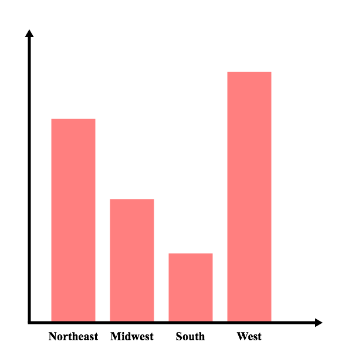

Factor Variables
Factor Variables
A factor variable is a property of an observation that has one of a finite number of non-numeric groups (levels). Common examples include
- sex (male, female)
- race (white, black, hispanic, etc.)
- region (Northeast, Midwest, etc.)
- group (treatment, control)
When trying to get a sense for the distribution of a factor variable, it is often useful to create a contingency table:
| Level | Number |
| Northeast | 521 |
| Midwest | 316 |
| South | 177 |
| West | 641 |
To try an get a more intuitive feel of the distribution, we can use bar charts:

- factor variable
- a variable that divides the sample into non-numeric groups
- level
- a value that a factor variable can take
- contingency table
- a table used to summarize factor variable data